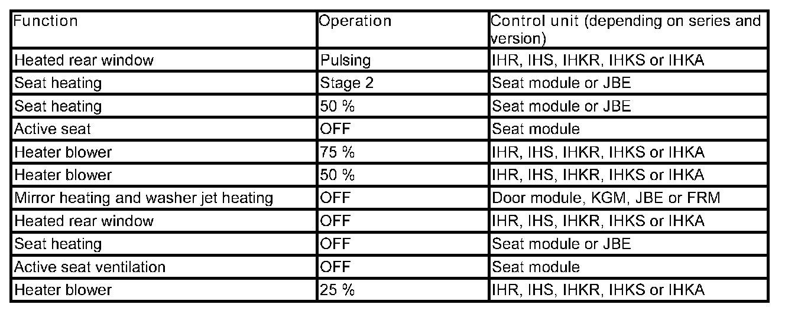

Power Management: Reduction or Shutdown of Individual Electrical Consumer
Power Management: Reduction or Shutdown of Individual Electrical Consumer
Reduction or shutdown of individual electrical consumer
The power management a subsystem of the energy management. The power management is run from the engine control unit (DME or DDE: Digital Engine Electronics or Digital Diesel Electronics). See also functional description or SBT 'Voltage supply'.
One function of the Advanced Power Management (APM) is to switch off individual consumers or reduce the power consumption. The APM is only available on vehicles with the intelligent battery sensor IBS.
System functions
The following system functions are described for power management ("Advanced Power Management"):
- Reduction or shutdown of individual electrical consumer
Reduction or shutdown of individual electrical consumer
The shutdown of individual consumer units or reduction of the power consumption lowers the power consumption in critical situations. This prevents the battery from discharging.
IMPORTANT: When the shutdown of individual consumer units or the reduction of power consumption is activated, the displays remains active (LEDs remain lit).
With the engine running
When the engine is running, a shutdown of individual consumers or reduction in the power consumption is only activated under 2 conditions:
- Battery charge state in the critical range
- Alternator subjected to full load
The following measures are performed in sequence under the prerequisites described:

When the battery charge state moves out of the critical range, the functions become 100 % available again.
With the engine off and the ignition switched on
With the engine off and the ignition switched on, the shutdown of individual consumers or reduction in the power consumption is only activated on the following series and versions:
- E81, E82, E87, E88, E90, E91, E92, E93: vehicles with petrol engine N43 and vehicles with diesel engine N47 and manual switch.
- R55, R56, R57, R58, R59, R60, R61: vehicles with manual switch as of model year 08/2007.
In order to avoid excessive power consumption when the engine is stopped, on these vehicles the seat heating, mirror heating, washer jet heating and heated rear window are switched off and the blower power consumption reduced to 75 %. The displays remain activated (LEDs still light up).
Notes for Service department
General notes
NOTICE: Procedure in the event of a customer complaint with regard to malfunctions
In the event of customer complaints with regard to malfunctions of the functions described above, check the function by activating via the diagnosis (component activation) and inform the customer of the issue, if necessary.
Diagnosis instruction
CAUTION: Activation via diagnosis
With the engine off and the ignition switched on, activation via the diagnosis continues to work for the affected functions, except for the seat heating (seat module) in the E81, E82, E87, E88, E90, E91 E92 and E93: The component activation then only works if the engine is running or the seat heating was switched off previously (LED OFF on the centre console control panel).